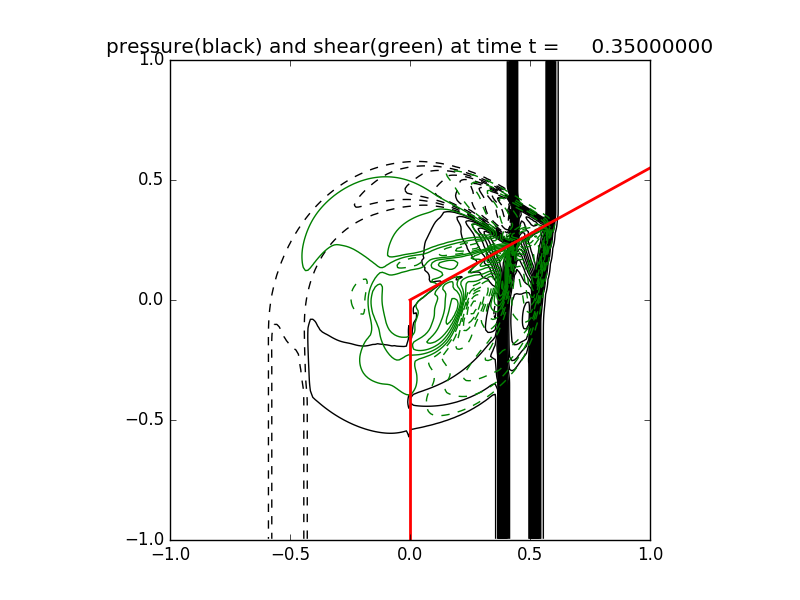

< < < Index > > >

Image source: /Users/rjl/git/clawpack/apps/fvmbook/chap22/corner/_plots/frame0007fig2.png
Other figures at this time: trace(sigma) shear contours All Figures
Other frames: 0 1 2 3 4 5 6 7 8 9 10 All Frames